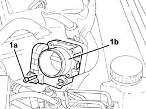
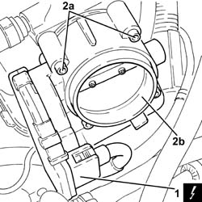

1056B17 throttle body intergral with dvl - r r
- Path
- Procedures > 10 ENGINE > 1056 PETROL INJECTION SYSTEM > 1056B multi-point injection system (mpi) > 1056B17 throttle body intergral with dvl - r r
- Kind
- repair procedure (removal / refitting; the operation number is the code)
- Applies to
- engines: 1.6 TS, 2.0 TS, 3.2 V6; all production periods
- Interactive page
- https://sloeber94.github.io/elrnDB-a147/en/#/3024832
Applies to: engines: 1.6 TS; all production periods
 Removing
Removing
 Refitting
RefittingEnsure that the ignition key is in the OFF postition, then disconnect the battery negative terminal.
 | Name | Connector |
|---|---|---|
- | Battery |
Proceed with the removal 1048A34 sleeve(s) from flow meter to air supply capacity case - r + r .
Proceed with the removal 1056B87 ignition/injection system control unit mount - r r .
1. Undo the remaining bolt (1a) and remove the throttle body integrated with D.V.L. (1b).

Applies to: engines: 1.6 TS; all production periods
Refitting
RemovingRefit the throttle body with integral DVL in its housing and secure provisionally with the bolt.
Proceed with the refitting 1056B87 ignition/injection system control unit mount - r r .
Proceed with the refitting 1048A34 sleeve(s) from flow meter to air supply capacity case - r + r .
Connect the battery terminal (-).
Applies to: engines: 2.0 TS; all production periods
Removing
RefittingEnsure that the ignition key is in the OFF postition, then disconnect the battery negative terminal.
| Name | Connector |
|---|---|---|
- | Battery |
Proceed with the removal 1048A34 sleeve(s) from flow meter to air supply capacity case - r + r .
Proceed with the removal 1056B87 ignition/injection system control unit mount - r r .
1. Undo the remaining bolt (1a) and remove the throttle body integrated with D.V.L. (1b).
Applies to: engines: 2.0 TS; all production periods
Refitting
RemovingApplies to: engines: 2.0 TS; all production periods
Refit the throttle body with integral DVL in its housing and secure provisionally with the bolt.
Proceed with the refitting 1056B87 ignition/injection system control unit mount - r r .
Proceed with the refitting 1048A34 sleeve(s) from flow meter to air supply capacity case - r + r .
Connect the battery terminal (-).
Applies to: engines: 3.2 V6; all production periods
Removing
RefittingEnsure that the ignition key is in the OFF position, then disconnect the negative battery terminal (-).
| Name | Connector |
|---|---|---|
- | Battery |
Proceed with removal 1048A48 throttle heater sleeve - r r .
1. Disconnect the electrical connection from the throttle body integrated with the D.V.L.
| Name | Connector |
|---|---|---|
1 | Throttle body actuator |
2. Undo the bolts (2a) and remove the throttle body integrated with D.V.L. (2b).
Remove the gasket.

Applies to: engines: 3.2 V6; all production periods
Refitting
RemovingReplace the throttle casing integrated with D.V.L, complete with gasket, back in its housing and fix it tightening the bolts to the recommended torque.
 | Fastening | Component | Ø | Value (daNm) |
|---|---|---|---|---|
- | Bolt | BUTTERFLY VALVE CASE/S (MPI) | M6 | (Air chamber side) 0.8 ÷ 1.1 |
Connect the electrical connection to the throttle body integrated with the D.V.L.
Proceed with refitting 1048A48 throttle heater sleeve - r r .
Connect the negative (-) battery terminal.
Topics linked from this page (6)
- 1048A34 sleeve(s) from flow meter to air supply capacity case - r + r
- 1048A48 throttle heater sleeve - r r
- 1056B81 run electronic ignition/injection control unit (single) self-learning procedure
- 1056B87 ignition/injection system control unit mount - r r
- A1B Battery ( Connectors )
- N75 Throttle body actuator